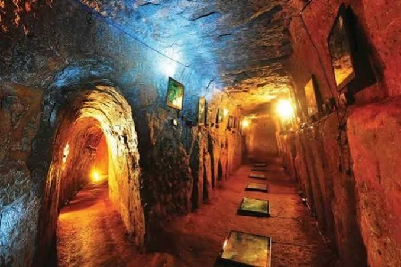
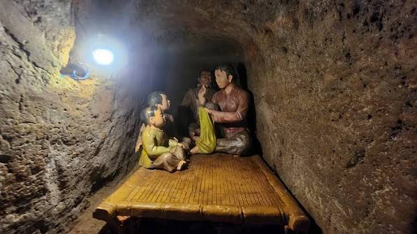
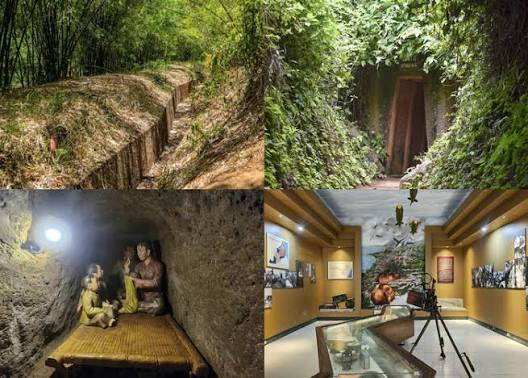
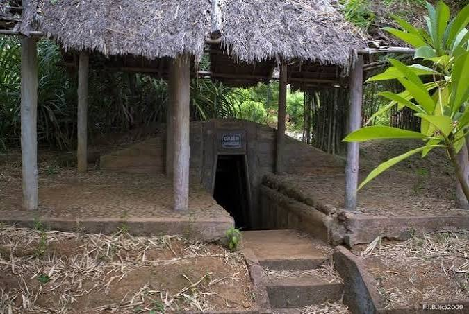

Di tích lịch sử đặc biệt của vùng đất Quảng Trị
Địa đạo Vịnh Mốc là một di tích lịch sử nổi tiếng nằm tại xã Vĩnh Thạch, huyện Vĩnh Linh, tỉnh Quảng Trị trước đây. Công trình được xây dựng trong thời kỳ kháng chiến chống Mỹ, trở thành nơi sinh sống, trú ẩn và sinh hoạt của người dân địa phương.
Hệ thống địa đạo được đào sâu trong lòng đất, có nhiều đường hầm và các khu vực phục vụ đời sống như nơi ở, hội họp, giếng nước và phòng sinh hoạt chung.
Ngày nay, Địa đạo Vịnh Mốc là điểm tham quan lịch sử, giúp mọi người hiểu hơn về cuộc sống và tinh thần kiên cường của người dân Quảng Trị trong chiến tranh.

Địa đạo Vịnh Mốc được xây dựng từ năm 1965. Trong hoàn cảnh chiến tranh ác liệt, người dân đã đào hệ thống đường hầm dưới lòng đất để tránh bom đạn và duy trì cuộc sống.
Địa đạo có nhiều tầng, nhiều ngách và các khu vực chức năng. Bên trong có nơi nghỉ ngơi, hội họp, giếng nước và những không gian phục vụ sinh hoạt của người dân.
Địa đạo Vịnh Mốc là minh chứng cho tinh thần đoàn kết, ý chí kiên cường và sự sáng tạo của người dân Quảng Trị. Di tích góp phần giáo dục truyền thống lịch sử cho thế hệ trẻ.



Tìm hiểu thêm về các địa điểm du lịch và di tích lịch sử của Quảng Trị.
Truy cập website →Khám phá thêm thông tin về du lịch và các di tích lịch sử Việt Nam.
Truy cập website →